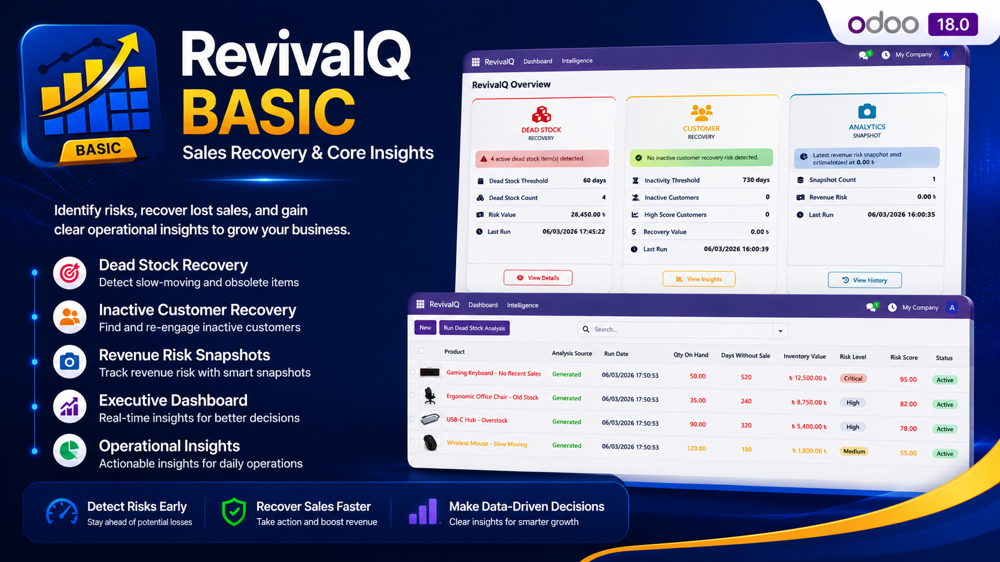
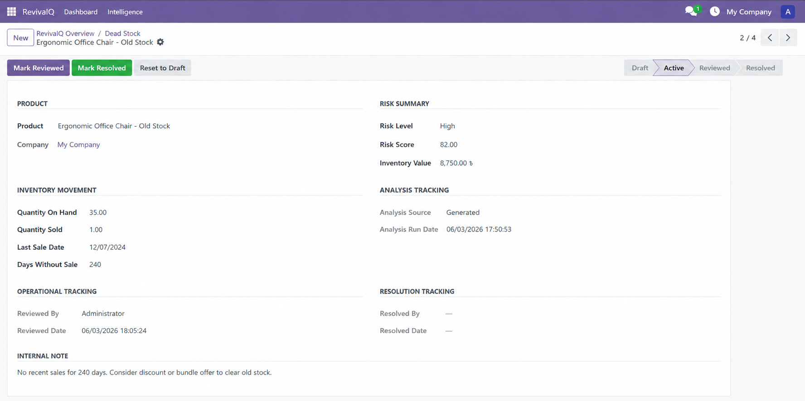

Executive Dashboard
View dead stock risk, customer recovery opportunities, and latest snapshot summary in one place.


RevivaIQ Base helps sales, inventory, and operations teams identify slow-moving stock, inactive customers, and revenue recovery opportunities through a clean Odoo-native dashboard.
Detect products that have not sold for a long time, review inventory risk, and prioritize items that need operational action.
Find inactive or lost customers, review recovery scores, and identify customers that may be worth contacting again.
Save point-in-time revenue risk summaries so managers can track whether recovery actions are improving over time.
View dead stock risk, customer recovery opportunities, and latest snapshot summary in one place.
Identify slow-moving inventory and review risk details before taking action.


Track inactive customers, recovery scores, and recovery workflow status.


Save revenue risk summaries and compare operational recovery progress over time.


Many businesses lose money because old stock stays unnoticed and inactive customers are not followed up. RevivaIQ Base turns these hidden risks into clear, actionable Odoo records.
It is designed as a practical foundation for sales recovery and inventory intelligence without adding unnecessary complexity.
For support, customization, or installation help, contact: support@codenrs.com
Website: https://codenrs.com/revivaiq